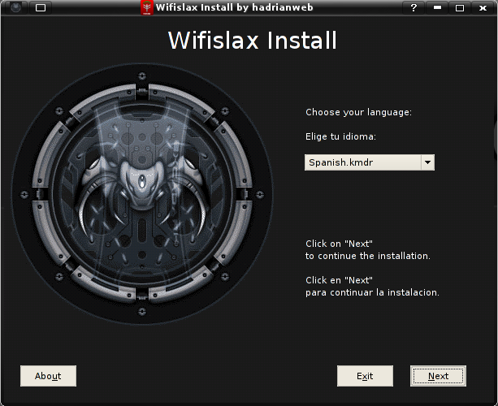

- Descarga el archivo *.iso correspondiente a la version del sistema operativo.
Usando el BOOT desde el computador o mediante un emulador como
VirtualBox
- Elije la opcion de arranque que prefieras.
Estas opciones cambiaran con respecto a cada version del sistema operativo.
Ten en cuenta los requerimientos de tu equipo.
- Luego elije el idioma de tu preferencia.

Y ya estas listo para disfrutar con Live WifiSlax!.